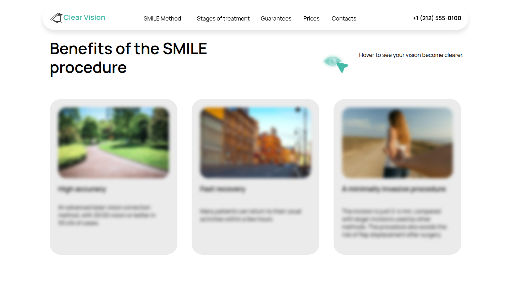

01
Начать с вопроса пациента
Первый экран задаёт главный вопрос о выборе методики и предлагает начать с короткого теста.
Сайт помогает посетителям разобраться в лазерной коррекции зрения и подводит к записи на консультацию. Понятная структура, ответы на важные вопросы и заметные кнопки помогают превращать интерес в обращения.
Открыть сайтСоздать понятный сайт о коррекции зрения, который отвечает на вопросы пациента, вызывает доверие к клинике и помогает превратить интерес в заявку на консультацию.
Решение об операции на глазах — личный выбор. Сайт последовательно отвечает на вопросы посетителя и помогает ему уверенно перейти к записи на консультацию.
Разные методики и незнакомые термины затрудняют первый шаг.
Посетителю важно понять, как проходят консультация, процедура и восстановление.
Информация о врачах, оборудовании и наблюдении должна быть на виду.
Когда посетитель готов обратиться, следующий шаг должен быть понятен.
Я выстроил страницу как последовательность ответов: какие есть варианты, как всё проходит, кто будет заниматься лечением и как записаться?
Схемы восстановлены по готовой странице, чтобы показать логику расположения блоков.
Главный вывод: объяснять решения поэтапно, показывать специалистов и оставлять следующий шаг на виду.
Знакомый визуальный язык и последовательная подача помогают понять предложение клиники до обращения.
Первый экран задаёт главный вопрос о выборе методики и предлагает начать с короткого теста.
SMILE, LASIK и поверхностная коррекция собраны рядом: различия можно увидеть, не разыскивая информацию по странице.
Подготовка, операция и восстановление показаны отдельно, чтобы последовательность было проще понять.
Карточки с именами и опытом знакомят посетителя с врачами. Информация об оборудовании остаётся доступной для тех, кому она важна.
Шесть вопросов помогают посетителю подготовиться к консультации. Тест предлагает обсудить результаты с врачом.
В мобильной версии блоки выстроены друг за другом, текст легко читать, а кнопки удобно нажимать.
Медицинские фотографии сочетаются с мягким серым фоном, свободным пространством и узнаваемым бирюзовым цветом клиники.

Заголовок превращает сложный выбор в понятный вопрос. Главная кнопка предлагает узнать о доступных вариантах.

Иллюстрации и короткие описания помогают сравнить методики и разобраться в сложной теме.

Размытые изображения напоминают о дискомфорте нечёткого зрения. При наведении картинка становится ясной — так посетитель может ощутить разницу и представить, как изменится восприятие мира.

Фотографии, должности и опыт показывают людей, которым пациент доверяет своё зрение. Рядом с каждой карточкой — кнопка записи.


Восстановлению, оборудованию и стоимости выделены отдельные блоки. Форма консультации появляется после необходимой информации.


На телефоне блоки расположены последовательно, а тест помещается на экране. Кнопки, текст и навигация остаются удобными.
Получился сайт, который объясняет сложную тему простым языком, знакомит с клиникой и ведёт посетителя к заявке на консультацию.
Помочь пациенту разобраться в коррекции зрения и уверенно решиться на консультацию.
Понятная структура, ответы на вопросы, знакомство со специалистами и заметные кнопки записи.
Посетитель получает нужную информацию и может оставить заявку в удобный момент. Такой путь помогает повысить конверсию сайта.
Демонстрационные данные: эти цифры вымышлены и показывают формат будущего отчёта. Реальные результаты не измерялись.

Для клиники нам был нужен не просто красивый сайт, а понятный инструмент, который помогает посетителям решиться на консультацию.
Максим продумал структуру страницы, понятно представил методы коррекции зрения и показал специалистов клиники. Посетитель может последовательно разобраться в своих вопросах и легко найти форму записи.
Особое внимание уделили мобильной версии: информация удобно читается на телефоне, а до заявки можно дойти в несколько простых шагов.
В процессе работы Максим был на связи, учитывал пожелания и предлагал решения, которые помогают сайту работать на привлечение клиентов.
Медицинскому сайту важно ответить на вопросы пациента, вызвать доверие и помочь ему сделать следующий шаг.
Последовательная подача информации, доверие к специалистам и удобная запись помогают посетителю принять решение об обращении.

Я посмотрю ваш сайт и предложу три идеи, которые сделают путь пациента понятнее.
Максим КоцарьUI/UX-дизайнер